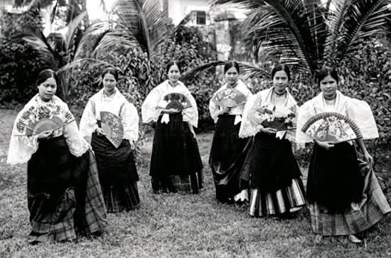
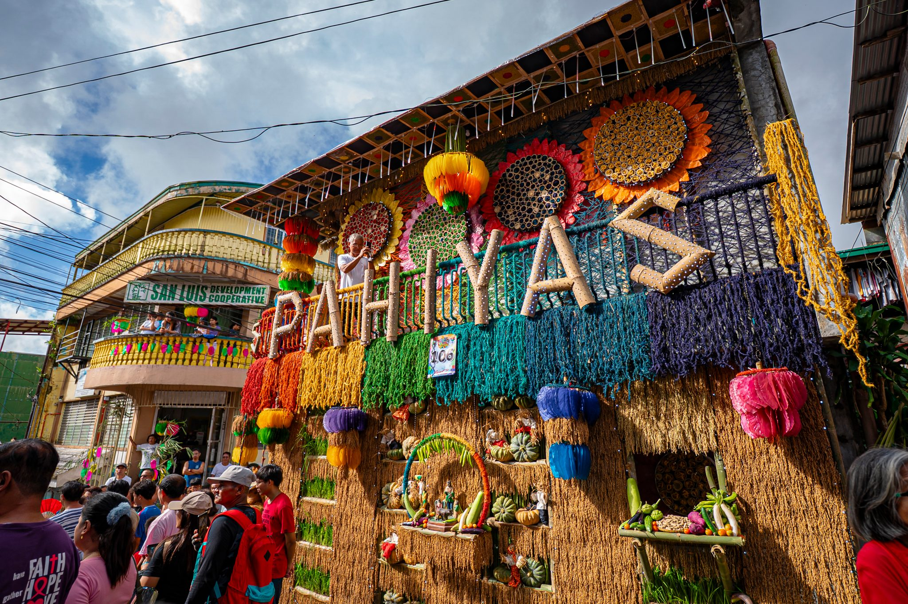
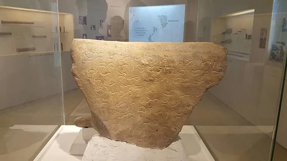
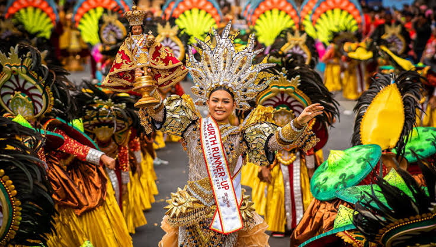
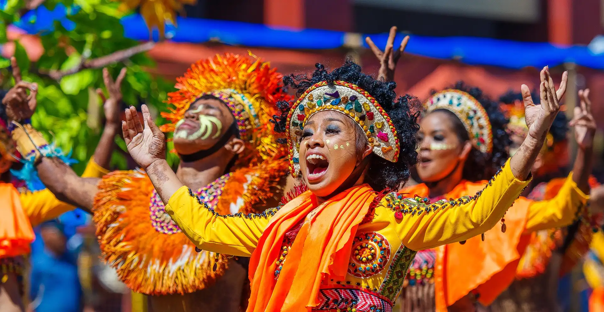
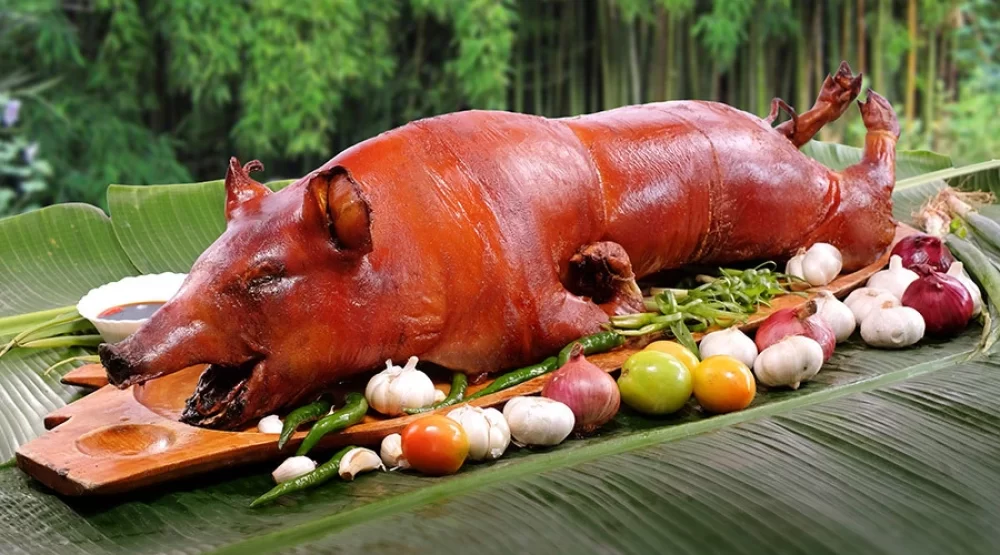
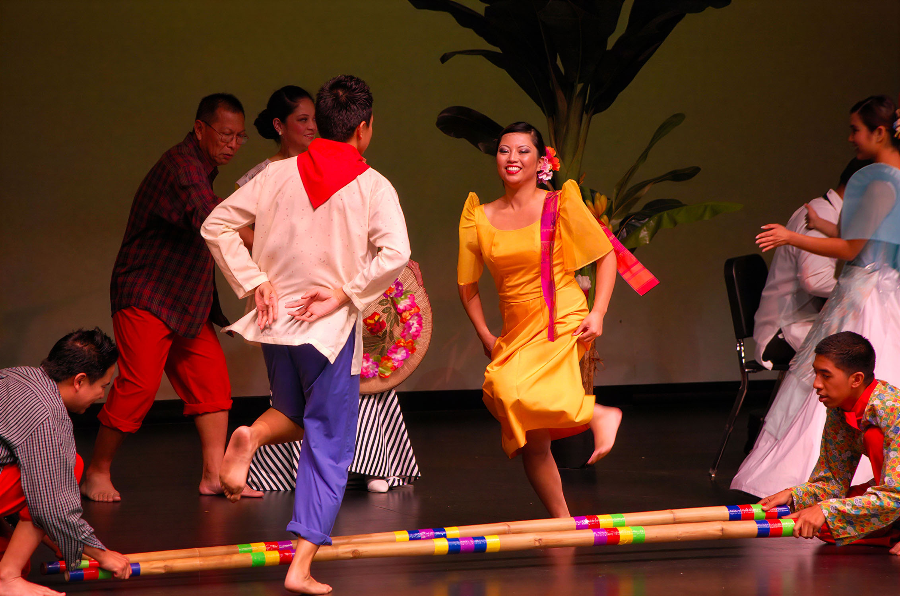

Culture Gallery
12 traditions across Luzon, Visayas, and Mindanao
Barong Tagalog
The sheer, embroidered formal wear worn by Filipino men.

Filipiniana / Terno
The iconic butterfly-sleeved dress of Filipino women.

Pahiyas Festival
Lucban's colorful harvest festival of rice wafers and crops.
Adobo
The country's beloved vinegar-and-soy braised dish.

Baybayin Script
The pre-colonial writing system of the Philippine islands.

Parol
The star-shaped lantern symbolizing Filipino Christmas spirit.

Sinulog Festival
Cebu's grand street-dancing festival honoring the Santo Niño.

Ati-Atihan Festival
The oldest Philippine festival, held yearly in Kalibo, Aklan.

Lechon
Cebu's famous whole roasted pig with crackling skin.

Tinikling
A folk dance imitating the tikling bird between bamboo poles.
Kulintang
A gong ensemble central to Maguindanao musical tradition.

T'nalak Weaving
Sacred dream-inspired cloth woven by the T'boli of South Cotabato.